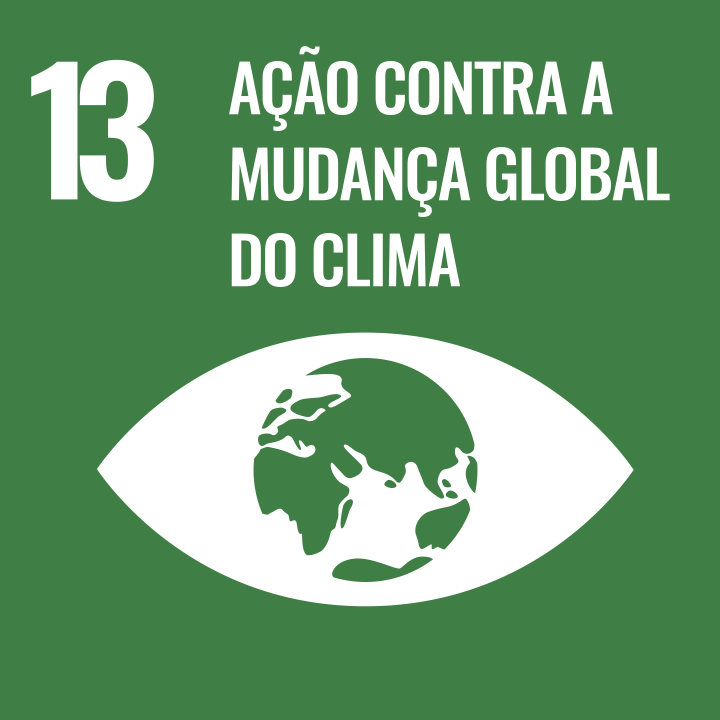

Projeto Integrador
Objetivo do desenvolvimento sustentável
O Objetivo do Desenvolvimento Sustentável (ODS) escolhido para esta pesquisa é o ODS 13: Ação Contra a Mudança Global do Clima.
A meta de interesse dentro deste ODS é a Meta 13.2.

Introdução e Justificativa
O Objetivo do Desenvolvimento Sustentável (ODS) escolhido para esta pesquisa é o ODS 13: Ação Contra a Mudança Global do Clima. Este objetivo visa tomar medidas urgentes para combater a mudança climática e seus impactos. A meta de interesse dentro deste ODS é a Meta 13.2, que busca integrar medidas da mudança do clima nas políticas, estratégias e planejamentos nacionais. Essa meta está relacionada à promoção de práticas agrícolas que contribuam para a redução das emissões de gases de efeito estufa, através da implementação de tecnologias de monitoramento e gestão ambiental.
De acordo com o artigo da Our World in Data, agricultura desempenha um papel crucial na alimentação da população global, mas suas práticas podem impactar negativamente o meio ambiente. O setor agrícola é responsável por uma parcela significativa das emissões de gases de efeito estufa, contribuindo para o aquecimento global, além de frequentemente utilizar recursos de maneira que prejudica ecossistemas naturais. Por isso, é fundamental encontrar maneiras de tornar a agricultura mais amigável ao meio ambiente e ajudar a proteger o planeta.
Com o avanço da tecnologia, surgem novas ferramentas que podem ajudar a resolver esses problemas. Um exemplo são os aplicativos de monitoramento agrícola, que permitem que os agricultores calculem e acompanhem as emissões de carbono em tempo real. Com essas informações, eles podem fazer mudanças rápidas nas suas práticas, ajudando a reduzir o impacto negativo da agricultura no meio ambiente e tornando-a mais sustentável.
Essa pesquisa é importante porque busca criar um aplicativo que ajude os agricultores a cuidar melhor do meio ambiente. Com esse tipo de ferramenta, a agricultura pode se tornar mais responsável e contribuir para a proteção do planeta, garantindo um futuro melhor para todos.
Problema de pesquisa
Como um aplicativo que calcula e rastreia as emissões de carbono pode incentivar práticas agrícolas mais sustentáveis e reduzir impactos ambientais?
Objetivo principal
O objetivo principal desta pesquisa é desenvolver um aplicativo de monitoramento agrícola que permita aos agricultores rastrear e reduzir suas emissões de carbono, fazendo com que o agricultor consiga calcular a sua emissão de carbono, promovendo práticas agrícolas mais sustentáveis e mitigando os impactos da agricultura. Este objetivo será alcançado através do desenvolvimento de uma plataforma digital que oferece dados em tempo real sobre o uso de recursos e práticas de manejo agrícola, possibilitando ajustes imediatos e informados.

Hipóteses
A hipótese principal dessa pesquisa é que o uso de um aplicativo de monitoramento agrícola pode reduzir as emissões de gases de efeito estufa nas propriedades rurais, fornecendo aos agricultores informações precisas e em tempo real sobre suas práticas agrícolas, incentivando a adoção de técnicas mais sustentáveis e eficientes. Acredita-se que, ao ter acesso a essas informações, os agricultores serão capazes de tomar decisões mais conscientes, reduzindo seu impacto ambiental e contribuindo para a mitigação da mudança climática.
Resultados esperados
Controle sobre a emissão de carbono;
Conscientização sobre práticas mais sustentáveis;
Conscientização sobre os impactos;
Ajuste em tempo real da emissão de carbono.
Referências
https://www.ipcc.ch/reports/.
http://www.fao.org/climate-smart-agriculture/en/.
https://sdgs.un.org/goals/goal13.